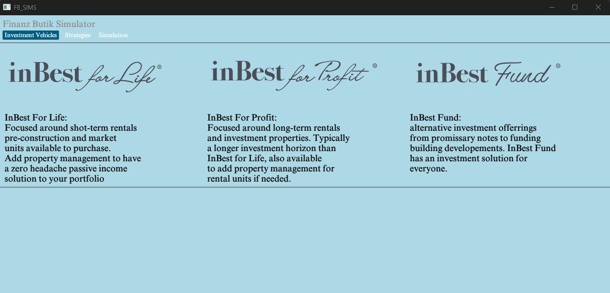
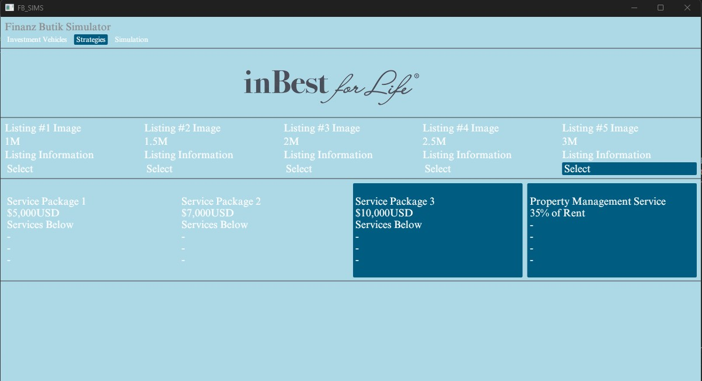
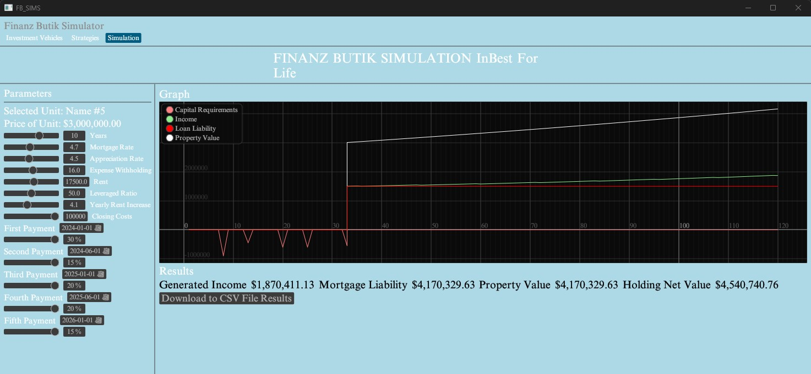

Figure 1: Main Application on Start

Figure 1: Once the application is opened the user is greated with a choice between the three investment sectors offered. the user clicks which one
resonates with them
the most and then is brought to a second page where they can select the offering.
Figure 2: Sector Selected

Figure 2 shows the rendered UI once the user has selected the investment opportunity that they want as well as any selected service packages
and property mangament.
Figure 3: Simulation Page

Figure 3 shows the rendered UI once the user selects Simulation. The UI offers a parameter selection area on the left side of the page where the parameters to
the function can be changed in real time and updated on the graph as well as below the graph where the last results are displayed. Center in the pane is the simulation
graph as it tracks the mortgage, rental income, capital requirements, and property value through the specified time span. Below that are the ending results of
the simulation along with the download to csv button. If clicked the user will have a csv file of the simulation downloaded to their desktop directory.
Main Function Code
use chrono::NaiveDate;
use eframe::egui;
use egui::{Margin,Color32, RichText};
//use egui_extras::RetainedImage;
use pages::{main_page::Sectors, product_page::{LISTINGS, PACKAGES,IbfpType, Fund}};
mod pages{
pub mod main_page;
pub mod product_page;
pub mod simulation_page;
pub mod ibfl_functions;
pub mod ibfp_functions;
}
//fn to set fonts for the text style
fn setup(ctx: &egui::Context) {
let mut fonts = egui::FontDefinitions::default();
fonts.font_data.insert(
"my_font".to_owned(),
egui::FontData::from_static(include_bytes!(
"../assets/TimesNewRoman.ttf"
)),
);
fonts
.families
.entry(egui::FontFamily::Proportional)
.or_default()
.insert(0, "my_font".to_owned());
fonts
.families
.entry(egui::FontFamily::Monospace)
.or_default()
.push("my_font".to_owned());
// Tell egui to use these fonts:
ctx.set_fonts(fonts);
}
fn main()->Result <(),eframe::Error>{
let options = eframe::NativeOptions{
initial_window_size:Some(egui::Vec2 { x: 1200.0, y: 900.0 }),
..Default::default()
};
eframe::run_native("FB_SIMS",
options,
Box::new(|cc|Box::new(Sim::new(cc)))
)
}
#[derive(PartialEq)]
enum Page{
Main,
Products,
Simulate,
}
struct Sim{
selected_page: Option,
product: Option,
selected_ibfl: Option,
selected_services: Option,
selected_mgmt:bool,
selected_ibfp:Option,
selected_fund:Option,
years:f64,
mort_rate:f64,
first_payment:NaiveDate,
second_payment:NaiveDate,
third_payment:NaiveDate,
fourth_payment:NaiveDate,
fifth_payment:NaiveDate,
interest_rate:f64,
service_pkg_price:f64,
price_precon:f64,
first_payment_percent:f64,
second_payment_percent:f64,
third_payment_percent:f64,
fourth_payment_percent:f64,
fifth_payment_percent:f64,
prop_mgmt:f64,
expense_withholding:f64,
app_rate:f64,
ibfl_rent:f64,
debt_ratio:f64,
rent_app:f64,
closing_costs:f64,
ibfp_unit_str:String,
ibfp_unit_price:f64,
occupancy:f64,
price_per_night:f64,
ibfp_investment_amount:f64,
ibfp_investment_amount_str:String
}
impl Sim{
fn new(cc:&eframe::CreationContext<'_>)->Self{
setup(&cc.egui_ctx);
Self{
selected_page: Some(Page::Main),
product: None,
selected_ibfl:None,
selected_services:None,
selected_mgmt:false,
selected_ibfp:None,
selected_fund:None,
years:0.0,
mort_rate:0.0,
first_payment:NaiveDate::from_ymd_opt(2024, 1, 1).unwrap(),
second_payment:NaiveDate::from_ymd_opt(2024, 6, 1).unwrap(),
third_payment:NaiveDate::from_ymd_opt(2025, 1, 1).unwrap(),
fourth_payment:NaiveDate::from_ymd_opt(2025, 6, 1).unwrap(),
fifth_payment:NaiveDate::from_ymd_opt(2026, 1, 1).unwrap(),
interest_rate:0.0,
service_pkg_price:0.0,
price_precon:0.0,
first_payment_percent:0.0,
second_payment_percent:0.0,
third_payment_percent:0.0,
fourth_payment_percent:0.0,
fifth_payment_percent:0.0,
prop_mgmt:0.0,
expense_withholding:0.0,
app_rate:0.0,
ibfl_rent:0.0,
debt_ratio:0.0,
rent_app:0.0,
closing_costs:0.0,
ibfp_unit_str:String::new(),
ibfp_unit_price:0.0,
occupancy:0.0,
price_per_night:0.0,
ibfp_investment_amount:0.0,
ibfp_investment_amount_str:String::new(),
}
}
}
impl eframe::App for Sim{
fn update(&mut self, ctx:&egui::Context, _frame: &mut eframe::Frame){
let margin = Margin::symmetric(7.0, 7.0);
egui::TopBottomPanel::top("Header")
.frame(egui::Frame::default()
.inner_margin(margin)
.fill(Color32::LIGHT_BLUE)
).show(ctx,|ui|{
ui.heading("Finanz Butik Simulator");
ui.horizontal(|ui|{
let main_page = self.selected_page == Some(Page::Main);
if ui.selectable_label(main_page, egui::RichText::new("Investment Vehicles")
.color(Color32::WHITE))
.clicked(){
self.selected_page = Some(Page::Main)
}
let product_page = self.selected_page == Some(Page::Products);
if ui.selectable_label(product_page, RichText::new("Strategies")
.color(Color32::WHITE))
.clicked(){
self.selected_page = Some(Page::Products)
}
let sim_page = self.selected_page == Some(Page::Simulate);
if ui.selectable_label(sim_page, RichText::new("Simulation")
.color(Color32::WHITE))
.clicked(){
self.selected_page = Some(Page::Simulate)
}
});
}
);
egui::CentralPanel::default().frame(egui::Frame::default()
.inner_margin(margin)
.fill(Color32::LIGHT_BLUE))
.show(ctx, |_ui|{});
match self.selected_page{
Some(Page::Main)=> pages::main_page::show(ctx, &mut self.product),
Some(Page::Products)=> match self.product {
Some(Sectors::InbestForLife) => pages::product_page::inbest_for_life(ctx,
&mut self.selected_ibfl,
&mut self.selected_services,
&mut self.selected_mgmt),
Some(Sectors::InbestForProfit)=> pages::product_page::inbest_for_profit(ctx,
&mut self.selected_ibfp,
&mut self.selected_services,
&mut self.selected_mgmt),
Some(Sectors::InbestFund) => pages::product_page::inbest_fund(ctx,
&mut self.selected_fund),
_ => (),
},
Some(Page::Simulate) => match self.product{
Some(Sectors::InbestForLife) => pages::simulation_page::ibfl_sim(ctx,
&mut self.years,
&mut self.selected_ibfl,
&mut self.selected_services,
&mut self.mort_rate,
&mut self.first_payment,
&mut self.second_payment,
&mut self.third_payment,
&mut self.fourth_payment,
&mut self.fifth_payment,
&mut self.first_payment_percent,
&mut self.second_payment_percent,
&mut self.third_payment_percent,
&mut self.fourth_payment_percent,
&mut self.fifth_payment_percent,
&mut self.prop_mgmt,
&mut self.service_pkg_price,
&mut self.app_rate,
&mut self.expense_withholding,
&mut self.ibfl_rent,
&mut self.selected_mgmt,
&mut self.price_precon,
&mut self.debt_ratio,
&mut self.interest_rate,
&mut self.rent_app,
&mut self.closing_costs),
Some(Sectors::InbestForProfit) => match self.selected_ibfp{
Some(IbfpType::Precon) => pages::ibfp_functions::ibfp_sim_precon(
ctx,
&mut self.years,
&mut self.ibfp_unit_str,
&mut self.ibfp_unit_price,
&mut self.selected_services,
&mut self.service_pkg_price,
&mut self.prop_mgmt,
&mut self.selected_mgmt,
&mut self.mort_rate,
&mut self.first_payment,
&mut self.second_payment,
&mut self.third_payment,
&mut self.fourth_payment,
&mut self.fifth_payment,
&mut self.first_payment_percent,
&mut self.second_payment_percent,
&mut self.third_payment_percent,
&mut self.fourth_payment_percent,
&mut self.fifth_payment_percent,
&mut self.app_rate,
&mut self.occupancy,
&mut self.price_per_night,
&mut self.expense_withholding,
&mut self.debt_ratio,
&mut self.rent_app,
&mut self.closing_costs),
Some(IbfpType::Mkt)=> pages::ibfp_functions::ibfp_mkt_sim(ctx,
&mut self.years,
&mut self.ibfp_unit_str,
&mut self.ibfp_unit_price,
&mut self.selected_services,
&mut self.service_pkg_price,
&mut self.prop_mgmt,
&mut self.selected_mgmt,
&mut self.mort_rate,
&mut self.app_rate,
&mut self.occupancy,
&mut self.price_per_night,
&mut self.expense_withholding,
&mut self.debt_ratio,
&mut self.rent_app,
&mut self.closing_costs,
&mut self.ibfp_investment_amount,
&mut self.ibfp_investment_amount_str),
Some(IbfpType::Mix)=> pages::ibfp_functions::ibfp_sim_mix(
ctx,
&mut self.years,
&mut self.ibfp_unit_str,
&mut self.ibfp_unit_price,
&mut self.selected_services,
&mut self.service_pkg_price,
&mut self.prop_mgmt,
&mut self.selected_mgmt,
&mut self.mort_rate,
&mut self.first_payment,
&mut self.second_payment,
&mut self.third_payment,
&mut self.fourth_payment,
&mut self.fifth_payment,
&mut self.first_payment_percent,
&mut self.second_payment_percent,
&mut self.third_payment_percent,
&mut self.fourth_payment_percent,
&mut self.fifth_payment_percent,
&mut self.app_rate,
&mut self.occupancy,
&mut self.price_per_night,
&mut self.expense_withholding,
&mut self.debt_ratio,
&mut self.rent_app,
&mut self.closing_costs
),
_ => (),
}
Some(Sectors::InbestFund)=> match self.selected_fund{
Some(Fund::Core) => pages::simulation_page::fund_core(),
Some(Fund::Plus) => pages::simulation_page::fund_plus(),
Some(Fund::FixedIncome)=>pages::simulation_page::fund_fi(),
_=>(),
},
_ => (),
},
None => println!("MASSIVE ERROR OCCURED"),
}
}
}
As is shown above the code outlines the Struct that holds the necessary data that needs to persist throughout the application's lifetime. The numerous
match statements are used to show the correctly rendered UI for the selected choice by the user. Below is a code snippet of the main application page
the other rendered UIs are structured similiarly so for brevity I will not include them all.
Main Page Code
use eframe::egui;
use egui::{Color32, RichText, FontId};
use egui_extras::RetainedImage;
#[derive(PartialEq)]
pub enum Sectors{
InbestForLife,
InbestForProfit,
InbestFund,
}
pub fn show(ctx:&egui::Context, selected_product: &mut Option){
let margin = egui::vec2(7.0, 7.0);
egui::TopBottomPanel::top("Sector Selector")
.frame(egui::Frame::default()
.inner_margin(margin)
.fill(Color32::LIGHT_BLUE)
).show(ctx,|ui|{
ui.columns(3, |col|{
let inbest_for_life = *selected_product == Some(Sectors::InbestForLife);
let ibfl_logo:RetainedImage =
RetainedImage::from_image_bytes("Ibfl", include_bytes!("../../assets/INBFL.webp"))
.unwrap();
col[0].add(egui::Image::new(ibfl_logo.texture_id(ctx),ibfl_logo.size_vec2()));
if col[0].add(egui::SelectableLabel::new(inbest_for_life,RichText::new(IBFL)
.color(Color32::BLACK)
.font(FontId::proportional(18.0))))
.clicked(){
*selected_product = Some(Sectors::InbestForLife);
}
let inbest_for_profit = *selected_product == Some(Sectors::InbestForProfit);
let ibfp_logo:RetainedImage =
RetainedImage::from_image_bytes("Ibfl", include_bytes!("../../assets/INBFP.webp"))
.unwrap();
col[1].add(egui::Image::new(ibfp_logo.texture_id(ctx),ibfp_logo.size_vec2()));
if col[1].add(egui::SelectableLabel::new(inbest_for_profit,RichText::new(IBFP)
.color(Color32::BLACK)
.font(FontId::proportional(18.0))))
.clicked(){
*selected_product = Some(Sectors::InbestForProfit);
}
let inbest_fund = *selected_product == Some(Sectors::InbestFund);
let ibfund_logo:RetainedImage =
RetainedImage::from_image_bytes("Ibfl", include_bytes!("../../assets/INBFund.webp"))
.unwrap();
col[2].add(egui::Image::new(ibfund_logo.texture_id(ctx),ibfund_logo.size_vec2()));
if col[2].add(egui::SelectableLabel::new(inbest_fund, RichText::new(FUND)
.color(Color32::BLACK)
.font(FontId::proportional(18.0))))
.clicked(){
*selected_product = Some(Sectors::InbestFund);
}
});
});
}
pub const IBFL :&str= "
InBest For Life:
Focused around shot-term rentals
pre-construction and market
units available to purchase.
Add property management to have
a zero headache passive income
solution to your portfolio";
pub const IBFP: &str= "
InBest For Profit:
Focused around long-term rentals
and investment properties. Typically
a longer investment horizon than
InBest for Life, also available
to add property management for
rental units if needed.";
pub const FUND :&str= "
InBest Fund:
alternative investment offerrings
from promissary notes to funding
building developements. InBest Fund
has an investment solution for
everyone.";
Thoughts
The application gives a finer control over the parameters useful for
modeling much better and clearer than a xlsx workbook would and is easier to navigate and read for
the potential investor. While it's not fully complete with specified values the framework is
ready to be used in production and creating it in Rust was a very insightful and enjoyable experience.